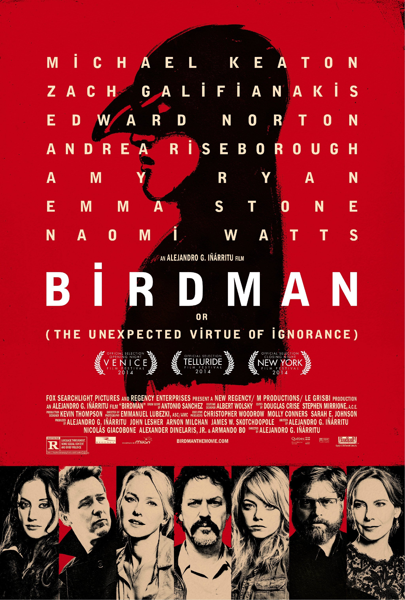

Favorite Movies

|
NebraskaNebraska is a 2013 American black-and-white road comedy-drama film directed by Alexander Payne and written by Bob Nelson.It stars Bruce Dern, Will Forte, June Squibb, and Bob Odenkirk. |
Manchester By the SeaAcademy Award Winner for Best Actor (Casey Affleck) and Best Original Screenplay (Kenneth Lonergan). Casey Affleck leads an all-star cast in this acclaimed and poignant film about a solitary janitor whose life is transformed after he becomes the guardian of his 16-year-old nephew. |
|  |
BirdmanFormer cinema superhero Riggan Thomson (Michael Keaton) is mounting an ambitious Broadway production that he hopes will breathe new life into his stagnant career. It's risky, but he hopes that his creative gamble will prove that he's a real artist and not just a washed-up movie star. |